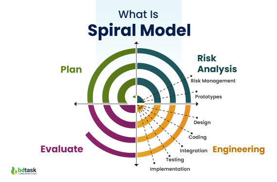

Spiraalmudel on iteratiivne tarkvaraarendusmudel, mille kirjeldas esimest korda Barry Boehm 1986. aastal. Mudeli arendusprotsessi kujutab spiraal, mille iga kordus keskendub konkreetsele arendusaspektile.
Iga kordus algab eesmärkide, piirangute, tulemite ja juhtimisplaani määratlemisega. Samuti tuvastatakse võimalikud riskid ja koostatakse strateegiad nende maandamiseks.
Selle etapi eesmärk on analüüsida tuvastatud riske ning leida viise nende maandamiseks, näiteks prototüüpide loomine, kui nõuded on ebamäärased.
Arendamiseks valitakse mudel, mis sobib kõige paremini riskide vähendamiseks. Näiteks suurte riskidega kasutajaliidese puhul võib abiks olla prototüüpide loomine.
Iga korduse lõpus hinnatakse projekti edenemist ja tehakse otsus, kas minna edasi järgmise kordusega. Kui otsustatakse jätkata, koostatakse järgmise faasi plaan.

| Head | Vead |
|---|---|
| Tarkvara valmib varajases etapis tarkvara elutsüklis. | Ei sobi väikestele projektidele, kuna on kulukas. |
| Tugev heakskiidu ja dokumentatsiooni kontroll. | On oluliselt keerukam kui teised SDLC mudelid. |
| Sobib kõrge riskiga projektidele, kus ärivajadused võivad olla ebastabiilsed. | Spiraal võib jätkuda määramatult. |